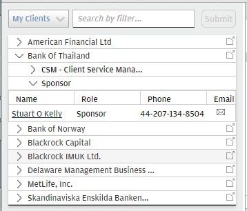
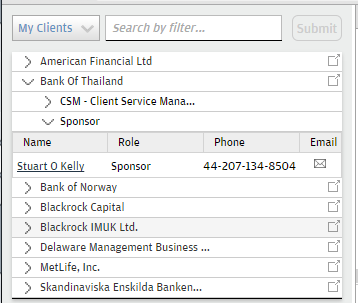

agenda 24Dec2014 Wed
The table headers in the portlet are lacking style. Also, the font is set at 13px while accotding to the style guide it should be 12px.
before:

after:

Course Purpose and Objectives
The purpose of this training is to provide an understanding of the:
CIB Technology Policies and Standards requirements
Processes to comply with the standards
On completion of this course, you will be better able to:
Explain the role of the CIB's IRM and Technologists in managing risk
Describe the risks associated with day-to-day activities
Identify the controls, policies and standards to mitigate the risks
Recognize when to implement controls to mitigate the risks
Mitigate risks in managed environments
Make risk-based decisions
This course should take you approximately 90 minutes to complete.
IRM Overview
The Corporate Investment Bank's IRM team enables technologists to:
Manage their risk and control as a part of their day-to-day job, every day
Make business decisions aligned to objectives and consideration of the likelihood and impact of a realized threat
Our IRM agenda is based on JPMC IT Policy and Standards that are governed via the Firm's IT Risk Leadership (ITRL) forum. Policies and standards are developed with consideration of relevant regulations for example, SOX, GLBA, and the expectations of our auditors and examiners.
We recommend that you review the JPMC IT Policy and Standards. You can do this by clicking the "JPMC policies and standards" resource at the bottom of the screen. This resource will be available at all times throughout this course should you wish to consult it.
JPMC IT Policy and Standards: https://itrc-archer.jpmchase.net/ (no reach)
IRM Overview
IRM primary activities include:
Typical areas of focus for IRM are:
IRM also provides Advisory Services, which involves:
Change Control Activities
Project Assurance
The Project Assurance Control Activity ensures that there are defined controls for managing projects and the software development life cycle.
Change Control
The Change Control Process Activity ensures changes are managed, approved, tested and scheduled before implementation.
IRM SMARTstart/SFTS Process
The IRM SMARTstart/SFTS Process Control Requirements are:
Information Risk
Access Management
Regulatory and External Audit
Disaster Recovery
Vendor Management, Offshoring and Outsourcing
Project FOG is Progressing Well.
The team have been working well on Project FOG and a lot has been achieved.
The next task is to prioritize the deliverables. Simon asks Troy about what should be looked out for.
Technology Developed Tactical Applications
TDTA is an 'enterprise application' if it performs one or more of the following functions:
TDTAs are required to be treated the same as any other applications including having a SEAL entry (central application repository) and are required to comply with the relevant IT policies and standards.
Control Objectives:
Data Classifications table
To access the table on Phoenix click here and see the table under the Risk Ranking tab.
Data Integrity
For the past month, Simon has been receiving a new data feed from "iTrade", a trading application. The AD team of "iTrade" reconciles information before sending it to Simon. Simon updated the application interface diagram with this new feed detail, as this was one of the control points introduced into the project after Internal Audit raised an issue last year.
Simon wonders if any other checks and balances are required at his end.
Priya informs Simon that the application interface design must include mechanisms to ensure that valid data has been received to prevent inaccurate, invalid, or duplicate data being processed. This is mandated to ensure bad data is stopped immediately from being processed further. Some examples of such checks are:
Simon decides to consult his business team to understand if any additional checks may need to be performed.
Why are Access Controls Required?
Access controls are required to protect information against:
This is achieved by ensuring that access to systems, data, and programs is restricted to only authorized users.
Access authorization protocols, processes, and procedures must be defined, documented, established, implemented and maintained in accordance with JPMC policy as well as other corporate policies, and with applicable laws and regulations for every application build.
What is Access Administration?
Let's look at Access Administration in more detail. Remember, this control ensures the creation and deletion of ID's is implemented with proper approvals; and transfers and off-boarding are managed appropriately.
The Access Administration control is intended to document and manage access authorization protocols, processes, and procedures that are defined, documented, established and implemented for any application.
These access management processes must be clearly defined and be in place to ensure that access entitlements are properly approved and assigned, commensurate with job responsibilities and support adequate segregation of duties.
Access Admin covers:
User On-boarding
The user on-boarding control is a "Preventative" control that leverages request for new systems access. By being preventative, it averts the risk of someone getting unauthorized access to a system without a properly documented and approved request.
The request for access ensures that the appropriate people approve it and ensures that access is appropriate for job function and responsibility. New system accounts should only be created by request on the recognized access provisioning tools in the firm, currently IBID/iCERT and EURC.
What is Privileged Access?
Let's look at Privileged access in more detail. Remember the Privileged Access Control Activity ensures access to privileged system functions is limited to approved individuals, and this is properly monitored and controlled.
Now that Simon has information about how the user access will be granted, he needs to consider the technology users' access in the production environment.
IRM has provided Simon with a reference table to guide him in determining the type of access a developer, L3, AD Manager, Operate, and so on, should have to Production.
What is Access Recertification?
Let's look at Access Recertification in more detail now. Remember the Access Recertification Control Activity ensures access is validated regularly to confirm that entitlements are appropriate.
Access Recertification is the "Detective" access control. It is used to capture access that is viewed as inappropriate after the access has been granted.
Recertification is a periodic revalidation user access in a particular system at several levels, this could be by entitlement or role (covers multiple entitlements).
The recertification process validates that access is still required for a valid business purpose and requires direct manager approval at the user level and information Owner approval at the system level.
The Access Control Toolset
So far in this topic we looked at these Access Control activities:
Security Configurations
Access Administration
Privileged Access
Access Recertification
The Access Control Toolset comprises the following tools and systems. Some are owned and operated outside of the Corporate Investment Bank. This toolset helps to implement the control activities.
| Tool /System | Control |
|---|---|
| *IBID/iCERT | On-boarding & Off-boarding and Automated Transfer Handling |
| IIQ (Identity IQ)/iCERT | Recertification |
| *CertMyID | Recertification |
| *Request Center (EURC) | On-boarding & Off-boarding |
| *Enterprise Password Vault | Emergency Privileged Access System |
* Denotes systems that are owned and operated outside of the Corporate Investment Bank.